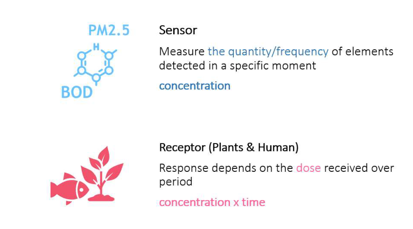
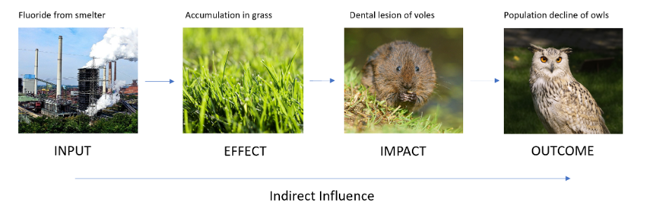
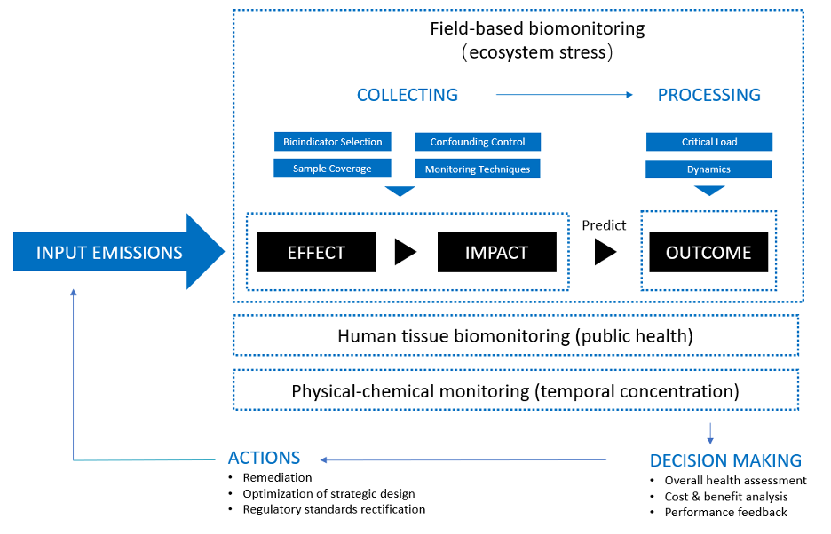
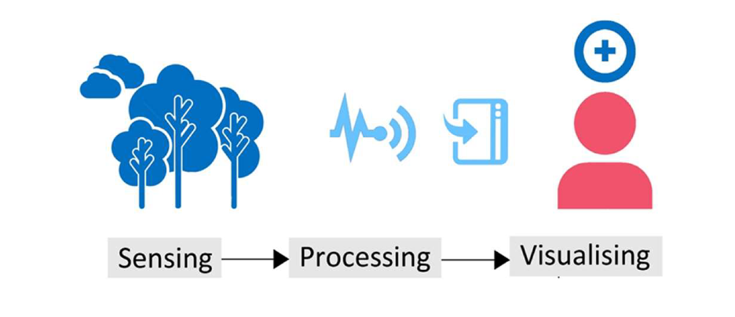
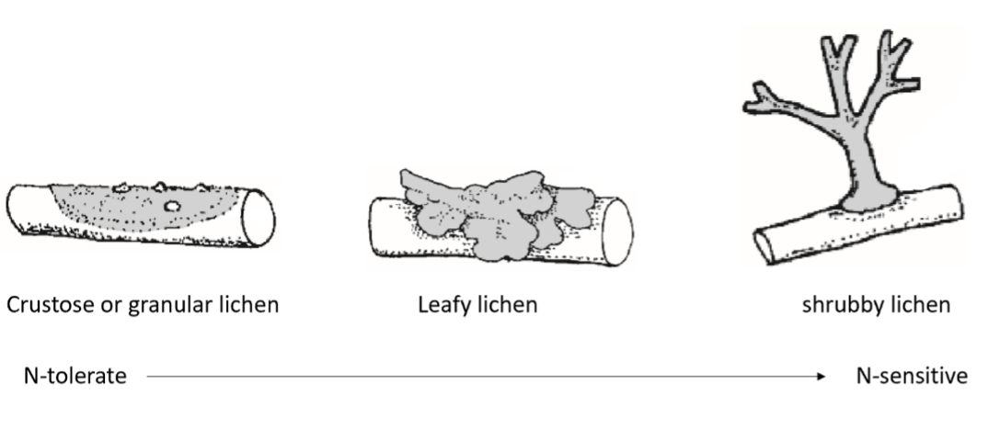
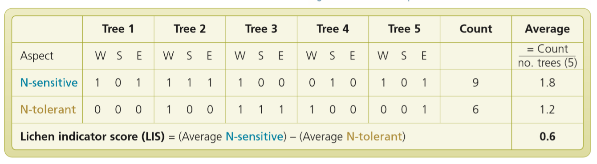
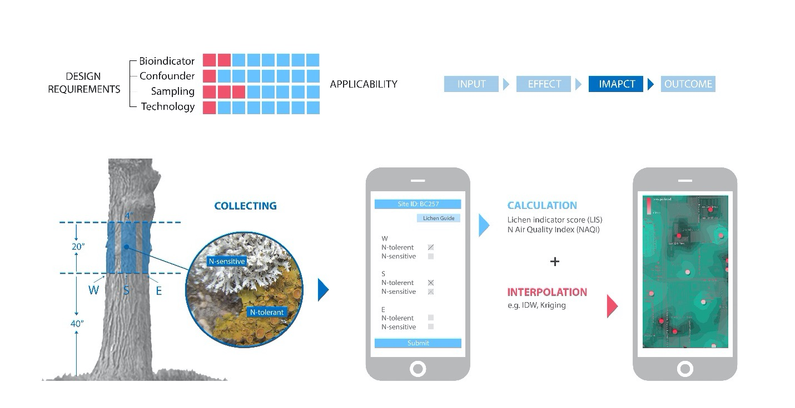
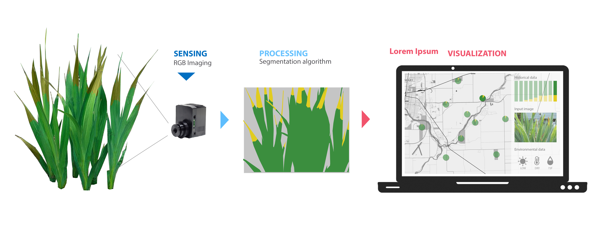

Smart Landscapes
Project goal
Revealing air pollution induced stress through in-situ biomonitoring
Advisors
- Professor Brian Deal, Chair
- Dr. Xiangrong Jiang
- Mr. Le Zhang
Keywords
- Air Pollution
- Site Monitoring
- Sensor Technologies
Design
- UI/UX Design
- Mobile app Design
- Landscape Design
Abstract
The thesis works on the design of a type of smart landscape which builds a data-driven dialog between humans and environment to reveal the environmental stress caused by air pollution. It investigates the methodologies to build an on-site biomonitoring system that emphasizes the design intervention of landscape architecture to make the system widely practicable. This framework aims to supply the idea of the way landscape architects scientifically interpret urban dynamics and support the decision-making process associated with air quality issues. It iscusses the methodologies of integrating the current study of biomonitoring into the built environment to deconstruct the ongoing relationship of people and the ecosystem towards their shared world.
Introduction
Canaries in the coal mine
Historically in the coal mining industry, miners carried canaries with them in the tunnels as early detectors of carbon monoxide and other airborne pollutants. Because canaries are more sensitive and vulnerable to the toxic gases than human, they will be killed as the toxic gases cumulate to a certain level and gave the miners a useful warning to evacuate. These “inhumane detectors” have been phased out and are now replaced by devices using sensor technologies.
These sensors are important for understanding the presence of toxic pollutants, but a critical difference remains between the sentinel species and the physical sensors. The physical instrument detects the temporal presence or concentration of gases. The sentinel species are responsive to the long-lasting cumulation of the toxic substances, which reveals the actual manifestation of the effects from the environmental changes.
Canary in the coal mine (George McCaa, U.S. Bureau of Mines)
Sensors vs. Receptors
Difference of response principles of instrumental sensors and natural species
The sentinel species are also known as bioindicators because they can reveal the environmental status due to their dose-responsive character and their sensitivity to the changing environment. There are many environmental impact assessment projects utilizing them as a frontline diagnostic tool to evaluate the impact of industrial activities. The precedent cases demonstrate the dependability of the responsive behavior from these species as the indicator of potential environmental risks and prove the feasibility of using in-situ biomonitoring approaches to generate data that is both statistically and biologically significant.
Problems
Advances in sensing and computing technology have shown the great potential to enable the visualization of complex and randomness of the physical world. However, professional fields such as landscape architecture are lagging in terms of interventions that engage these technologies in the application of design practices to enhance the interactions of human and the built environment. The landscape, as a mediator connecting human and nature is potential to be a valuable tool for interpreting a changing environment.
The landscape in general, however, is underexplored when it comes to the increasing environmental challenges and the demands of urban areas. In-situ biomonitoring is one landscape-based approach. Biomonitoring plots are more flexible in scale and location, which can help shape design interventions over time to respond to the evolutive environment- in comparison to electronic monitoring.
Air quality has been one of the important environmental issues that humans have struggled with for decades. Although the physical-chemical monitoring stations or devices has been actively used to provide information about the levels of different pollutants in the atmosphere temporally, data from the electronic monitoring system is insufficient to assess the overalls effects. It is worth exploring whether the data provided by the biomonitoring system can be impeccably complementary to the data collected by the physical-chemical sensors and their cooperative implications in the decision making of urban planning and management regarding air quality issues.
DESIGN CONSIDERATIONS
Demonstrate the challenges of the wide implementation of biomonitoring system under the uncontrolled environment
This section summarizes several thoughtful considerations of in-field biomonitoring that help the system to respond to air pollution in predictable and reliable ways. It intends to build a more automatic system with fewer human interference. These elements also address the physical deployment in the system and give landscape architects important insights of their essential responsibility in the development in the in-situ biomonitoring. These considerations include the selection of bioindicator, confounding factors control, as well as site selection and sampling strategies.
Selection of Bioindicator
There is no global bioindicator. The bioindicator need to be selected based on previous study of the site. Tests in experimental stage are also of great help to select the most suitable bioindicator for the project and maximize the durability of the project.
Confounding Factors
To reduce the influence of other factors on the results, the project needs to apply related tactics before and during the biomonitoring. In the schematic design phase, designers should investigate the local climate and environment to explicit inclusion of any confounding factors.
Siting and Sampling
Following the site selection rules corresponding to the distribution pattern of pollutants, landscape architecture professionals can assess on the suitability of merging biomonitoring system into variable types of urban space to improve the spatial coverage.
Monitoring Technologies
Existing long-term biomonitoring projects require replicated on-site manual diagnosis.Improved data manipulation methods are needed to better address the challenges of the labor-intensive biomonitoring process and the widespread application within the area of interest.
CONCEPTUAL FRAMEWORK
A resilient air pollution management tool and a responsive implementation framework
The hierarchical complexity of influences to the environment still needs to be fully understood by observation on more phenomena that have a causal link with the emission input. Taking one step closer to the real influences resulted from the air pollution on the entire society, biomonitoring appears to be an approach that can inform or predict the long-term consequences.
A hypothetical example given in the book is the different levels of influences caused by fluoride emissions. An effect is the accumulation of fluoride in the tissue of grass. The voles feed on the grass and have dental diseases, which can be an effect if it just influences the feeding ability instead of the overall population of voles. If the population of voles decreases to a certain level, a potential outcome can be the dramatic decline in the population of owls, which are the main predator of voles. This example not only embodies the causal links between these terms but also reflects the function of biomonitoring to understand the indirect implications of input emissions on the ecosystem.
Hypothetical example of effect, impact, and outcome (Bealey et al., 2008)
Taking use of the sequences and relationships between these terms, biomonitoring monitors on the initial effects and impact that can be measured before the adverse outcomes are taking place. In the decision-making stages, regulations and measurements can be developed or adjusted by referring to the outcomes predicted from the biomonitoring results. The graph below shows the conceptual scheme of air pollution biomonitoring, staring from the input pollution, eventually output results as previous measures influence on the input.
Design modules
Proposed design modules aim to provide examples to integrate the traditional in-field biomonitoring approaches and advanced technologies. Compared to the conventional biomonitoring practices that are mainly for research purposes, these modules are more public-inclusive. Following the sequence of the basic module of the smart landscape design below, each module establishes a corresponding data manipulation system. The step-in phase of each module responds explicitly to the hierarchy of influences (effect, impact outcome) in the in-situ biomonitoring framework.
Module 1: Lichens & Nitrogen Dioxide
Nitrogen dioxide has been the dominant nitrogen deposition problem in most of the cities because the major source of it is the combustion of fossil fuels especially fuel used in vehicles. Lichen is a combination of fungi and algae which makes it absorbs pollutants or nutrients directly from the atmosphere without additional roof uptake. The distinct morphology and color of nitrogen-tolerant lichen species and nitrogen-sensitive lichen species facilitate the biomonitoring process, making it a simple and inexpensive approach to evaluate the atmosphere pollution extents.
The proposed air quality evaluation network cooperates with the air pollution-related epiphytic lichens monitoring methods and design of smart phone applications to increase the public participation in gaseous nitrogen pollution monitoring and public awareness of the air pollution attributable risks. The mutually supportive relationship between oak trees and lichens makes oak trees an excellent base for observing the lichens community due to the abundant and diverse lichen species that may occur on the tree.Existing oak trees in open public space with lichen growing on the trunk can be utilized by landscape architects to create in-field lichen biomonitoring sites.After determining the biomonitoring sites, take the sampling areas between 40 and 60 inches aboveground on the trunk surface in three different aspects (W, S, E). Construct an elevated metal frame or wood frame surrounding the tree to outline the grid reference of the sampling area directly.
LIS calculation example
A smartphone application will geographically label these biomonitoring sites on an interactive map interface. Users can find the nearest location and survey under the guidance of the application.A user can select the closest biomonitoring site and start to record the lichens species information. The data recording interface displays simple checkboxes for the presence/absence of two groups of lichen species. Several in-field lichens biomonitoring projects choose to measure each group of lichens' areas to develop the lichens community composition indicator.The application will automatically calculate the LIS (Lichens Indicator Score) if there are data available for up to 5 trees nearby.
The interactive map will generate georeferenced markers indicating the nitrogen pollution level converted from the LIS. The markers are generated by selecting the most up-to-date data within the same timescale according to the setting of the application. Users can also have access to historical data to obtain the temporal changes in the polluted area. Using the interpolation models suitable for the pollution nature and regional characteristics, the application estimates the polluted level of the region containing no biomonitoring site based on the value of sample points.

Module 2: Gladiolus and Fluorides
This design module intends to develop an atmospheric fluoride biomonitoring network via building in-field smart landscapes that utilize gladiolus and sensor-based analysis. Fluoride has been proved to have more damage to plants and indirectly influence the wildlife species that feed on the polluted plants while few data associating with the fluoride-related leaf necrosis or chlorosis in field are available. A previous study has demonstrated the practicality of using the leaf damage classes of gladiolus as a standard for evaluating fluoride effects on the ecosystem. Moreover, the pollution-induced leaf damage on gladiolus starts from the tip, which makes it visually separate from the healthy part.
To accurately record disease severity data of gladiolus when exposed to the atmospheric fluoride pollution, this design module proposes using sensors (cameras) to replace the visual measurement and support remote data acquisition and online diagnosis instead of timely on-site observation. A low-cost RGM camera detecting visible spectrum is positioned in the horizontal orientation and aligned to be perpendicular to the background wall. The camera is installed to take photos of input images based on a set time interval.
After acquiring input images captured by the sensors, the processing system deals with the stored data by feature extraction and segmentation. A specific segmentation algorithm is applied to separate the injured part and the healthy part of plants and background color. Instead of the counted pixels, the percentage of leaf damage area is an indicator of this design module because the distortion of leaves is difficult to identify in the 2D image. The decision support platform superimposes and visualizes each biomonitoring site's leaf injury indexes geographically on an interactive map, revealing dispersion pattern and intensity of fluoride pollution. The historical data, input image, and climate data are displayed to support a further diagnosis by professionals. Remote data collection facilitates intensive field investigation, while further research and practices are needed to study if sensor-based analysis can complement or substitute manual estimation under field conditions. Analysis combining with leaf samples analysis and available atmospheric sampling data further help in excluding the suspect data.

Module 3: Common Milkweed and Tropospheric Ozone
This design module aims to build a botanical garden using milkweed species and advanced sensing technologies to track the presence and changes of ground-level ozone. To further reduce the bias, two groups of milkweeds are extensively planted to produce a comparison. Common milkweed is used as the bioindicator species that reveals notable symptoms when exposed to phytotoxic ozone, whereus another ozone-tolerant milkweed that exhibits slight or no ozone injury is also planted as a comparison group.

The most proper ozone-diagnostic algorism for NDSI needs to be studied before in-field practices. A UAV drone carrying micro spectrometer is a tool to scan milkweed fields and create NDSI imageries. The drone can be controlled remotely by a mobile application or desktop software. It automatically navigates from the starting point to the endpoint to collect samples in each plot on sunny days within a week following a pre-defined path within battery life.
The elongation data is transferred to an on-site device via Bluetooth and stored in the physical or virtual terminal device. The interface of software displays the results acquired in the field by calculating and analyzing the contrast of the data from two milkweed groups. The software will generate a heat map to visualize the data of each scanned unit recorded by the drone-based spectrometer. Historical data is also available to support the analysis of the trend of ozone-induced stress. After the in-depth diagnosis, the public can have access to the biomonitoring results that document the temporal and spatial analysis of the ozone’s influences.

Design Implications
Smart landscape systems that integrate biomonitoring practices and modern technologies can be strategic tools that bridge humans to the environment in support of design and planning decisions. It provides a platform for evaluating the long-term stress of the living environment under the exposure of air pollution and predicting the likelihood of the significant outcomes from the perspective of natural species. More public-inclusive design strategies help draw attention to air quality issues and engage the public to speculate about the interwoven connections between humans and nature toward the shared world.
It still requires parallel efforts in bioindicator species cultivation, technologies development, and data interpretation because large-scale biomonitoring demands to report in high accuracy to achieve the expected performance with the upfront investment. The demand for implementation of the proposed smart landscape has the promise to stimulate the collaborative developments of transdisciplinary fields to contribute a more reliable system.


{kind=link}
{kind=link}
{kind=link}
{kind=link}
{kind=link}
{kind=link}